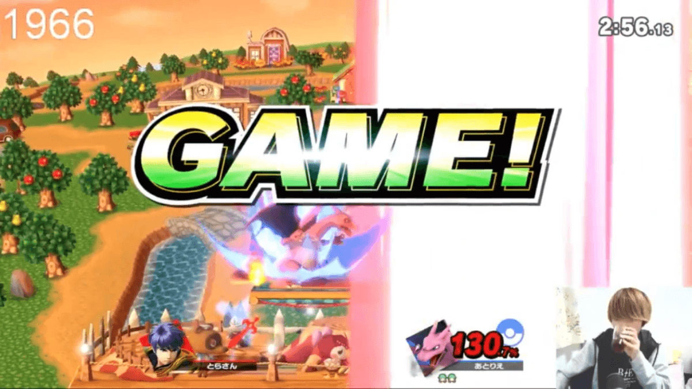

今回はPNGesportsの中でもトップクラスの実績を持つあとりえ選手にインタビューを行いました。その実力の秘訣に迫ります。
趣味は〇〇？意外なあとりえ選手の素顔に迫る！
– それでは簡単な自己紹介の方をお願いいたします。
1999年生まれ、今年で21歳になりますあとりえです。大阪府に住んでいます。
– 趣味はなんですか？
ラップバトルを見る事です。
– ラップはご自分でやられたりするんですか？
やりますけどまだ人に見せるようなレベルじゃないのでコソコソ練習しています（笑）。やはり言葉選びは難しいですよね。
– 今はコロナウイルスの影響で外に出れない時間が続いていると思うんですけど何かご自宅でされていたりするんですか？
YoutubeやAmazonPrime等くらいしかすることがないっすね（笑）後は大阪城公園へ行ってリフティングなんかをしています。
– リフティングですか？
はい。僕元々サッカー部だったんですよ。それで今でもリフティングをやっています。
– ゲームをやってるとどうしても健康上はあまり良くない点もあるかと思いますが、何か対策とかされてるんですか？
今は自粛期間で行けてないんですけど普段はジムによく行きますね、それこそジムが居場所ってくらい（笑）。音楽とか聴きながら追い込みます。
本気でゲームと向かい合う
– 1日ゲームはどのくらいやっているんですか？
自粛期間前は一日7~8時間やっていました。今は2~3時間くらいしかやっていないですね。
– えっ！自粛期間に入って逆に減ったんですか？
スマブラって実はあんまりオンラインに向かないゲームなんですよね、いわゆる入力遅延というものがめちゃくちゃ多くて。なのでオフ大会がないときついですね…
– スマブラ以外に何かハマっているゲームはありますか？
ないですね、僕ゲームが下手なので（笑）。
– えっ！じゃあ今流行のどうぶつの森とかそういうゲームもやらないんですか？
言語両断です（笑）。流石に暇なので少し悩んだんですけど結局買わなかったです。
– 6年間続けてこられた秘訣ってあるんですか？
とにかく勝負事が好きで、大会がめちゃくちゃ面白いんですよね。その勝ち負けに対する刺激はずっと感じています。それこそ大会がなければこんなに長くは続けられていないです。
– 今ってプロゲーマーを専任でやっているんですか？
いえ、今は大学に通いながらになってます。ただプロゲーマーと学生の両立はなかなか難しいですね。どちらかというと今はゲームの方に重心を置いてやっています。
– プロになった経緯を教えてください。
19歳の時にプロになりました。昔から勝負事が好きで、たまたまスマブラに出会い大会に出られるようになりました。そして大会で勝ち始めた頃にPACkageさん（PNGの親会社）から声をかけてもらい、契約させていただきました。
– 実際にPNGに加入してよかったなと思ったことはなんですか？
金銭面でのサポートはとても助かっています、東京で大会が開催されることが多いので交通費の支給はとにかく助かりますね。後、ユニホームを着ると気持ちが入りますね（笑）。PNGのユニホームは良くて気に入っています。

プロとして活躍している裏側にはこんな葛藤があった！
どのような選手になりたいですか？
理想はウメハラ選手やときど選手のように誰とも馴れ合わずにスキルだけを高め続けることですね。そういう選手を見るとかっこいいなと思います。
– 普段普段どのような練習をされてるんですか？
実は特別な練習っていうのはあまりしてないんですよね。普段から普通の試合しかやっていないです。ただもっと効率的な練習というものもやっていかないといけないなとは思っています（笑）
– プロになって一番気を付けていることはなんですか？
SNSで悪い言葉を使わないことです（笑）。オンライン対戦等でイライラしてもTwitterに書き込むのだけはやめるようにしています。
– プロになって一番大変だったことはなんですか？
大会で勝てない時が一番きついです。プロに入った時はあまり結果がついて来ず苦労しました。

“プロ”にしかわからない。日本のesports業界が抱える問題
– 色々なリアルスポーツや他の国のesports大会と比較した時に今の日本のesportsに足りないなと思う点があったら教えてください。
海外に比べて賞金が少ないなと思います。特にスマブラは賞金少ないので増やして欲しいですね、モチベーションにも繋がるし、Youtube等の副業をする必要もなくなると思うので。
– 今のスマブラに足りないなと思ってる点はありますか？
ないと思います！スマブラは界隈もしっかりしてますしゲーム性もかなり完成されてると思います。公式がesportsに本腰入れたら覇権取れます（笑）。
– 最後に今後の目標を教えてください！
“ウメブラ”で優勝したいです！そして海外でプレーしてみたいです。
– 海外に行かれるんですか？
いや、海外に移住することはないですね（笑）。日本気に入っているので。
はい！今回はPNG内でも超トップクラスの実力を持つあとりえ選手にインタビューしました！ウメブラで優勝できるようにみなさま応援よろしくお願いいたします！
記事作成者紹介
noma / 野間口陸人
2002年生まれの現高校3年生(2020年4月時)。小学5年生くらいの頃からMinecraft上でのオンライン対戦ゲームにハマり、以後はcsgoを中心にFortniteやapex、r6s等を幅広くプレー。現在は観客が楽しいesportsをテーマに記事を書くなどの活動している。